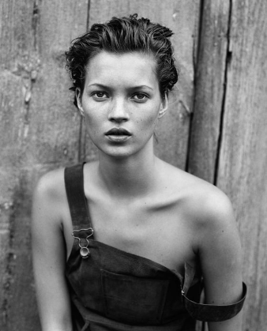

Born in Leszno (Poland), he spent his childhood in Duisburg (North Rhine-Westphalia). He worked as a window dresser for a local department store and enrolled the Berlin Academy of Fine Arts in the early 1960’s. He remembers these years: "I preferred actively seeking out van Gogh’s inspirations, my idol, rather than painting the mandatory portraits and landscapes taught in Art schools...".
Inspired by the work of the Dutch painter, he moved to Arles for almost a year, and then embarked a journey hitchhiking through Spain and North Africa. He later studied free painting at the College of Art in Krefeld. Influenced by Joseph Kosuth and the Conceptual movement, he is invited before graduating to present his work at the renowned avant-garde Galerie Denise René - Hans Mayer in 1969. After moving to Düsseldorf in 1971, he turned his
attention to photography and worked for two years assisting German photographer Hans Lux, before opening his own studio in 1973. Becoming well known in his native country, he joined the Stern magazine family along with –photography legends Helmut Newton, Guy Bourdin and Hans Feurer, and moved to Paris in 1978 to pursue his career.
Considered a pioneer in photography, he introduced a form of new realism by redefining the standards of beauty with timeless images. His humanist approach and idealisation of women sets him apart from the other photographers as he privileges the soul and the personality. He changed drastically the standards of the fashion photography in times of excessive retouching considering that there is something else that makes a person interesting, beyond their age. He explains: "This should be the responsibility of photographers today to free women, and finally everyone, from the terror of youth and perfection." His singular vision, presents them in their pure state, "in all honesty", avoiding all stereotypes as he privileges a face with hardly any make-up, in a baring that enhances the authenticity and the natural beauty of his women.
- first bullet
- second bullet
- third bullet
Without paying too much attention to the clothes, considering that: "If you take out the fashion and the artifice, you can then see the real person." Lindbergh says. British journalist Suzy Menkes points out that the German photographer is: "Refusing to bow to glossy perfection is Peter Lindbergh's trademark – the essence of the images that look into each person's unvarnished soul, however familiar or famous the sitter."
Suzy Meneks Points Taken
A pioneer in photography
Lindbergh is the first photographer to include a narrative in his fashion series, his storytelling brought a new vision of art and fashion photography. Over the years, he has created images that marked the history of photography, characterised by a minimalist approach of the post-modernist photography. Back in 1988, Lindbergh garnered international acclaim by showing a new generation of models all dressed in white shirts that he had recently discovered and launched their careers. A year later, Linda Evangelista, Naomi Campbell, Cindy Crawford, Christy Turlington and Tatjana Patitz, young models then, were photographed together for the first time by him for British Vogue's legendary January 1990 cover.